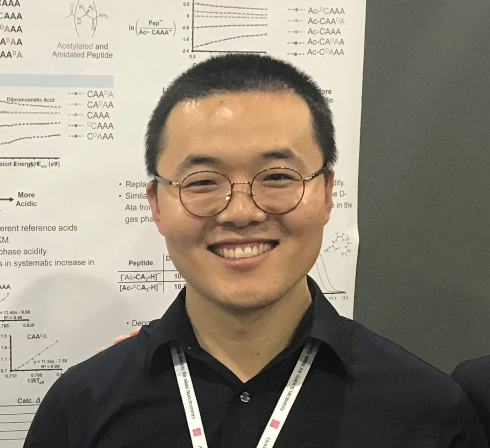

Yuntao Zhang, Ph.D.
Senior Scientist · AI & Mass Spectrometry for Biologics
Bristol Myers Squibb · San Francisco Bay Area, California · DS4CABS Admin & Mentor
About
Yuntao Zhang is a Senior Scientist at Bristol Myers Squibb in the San Francisco Bay Area, specializing in high-throughput bioanalytical and structural mass spectrometry — including high-resolution covalent carbene footprinting for epitope and paratope mapping, peptide mapping, glycan profiling, intact/subunit mass analysis, and native mass spectrometry — supporting biologics (bispecific antibodies and antibody–drug conjugates [ADCs]) as well as CAR-T cell therapy programs.
Complementing his experimental work, he integrates molecular modeling, machine learning and deep learning (Python/PyTorch), biological foundation model fine-tuning, automated LC-MS data analysis pipelines, and AI agent engineering workflows to advance AI-driven drug discovery and rational therapeutic design.
Contributions to CABS
Within the Chinese American Biopharmaceutical Society (CABS), Yuntao serves as an Admin & Mentor in the DS4CABS Data Science Program, supporting program operations and mentoring interns in machine learning and bioinformatics pipelines. In September 2026, he received the CABS 2026 Mentor Impact Award in recognition of his outstanding mentorship, guidance, and dedication to supporting the growth and success of interns in the CABS Data Science Summer Internship Program.
Experience
-
Scientist – Senior Scientist
— Bristol Myers Squibb
San Francisco Bay Area, CA · Oct. 2021 – Present
Leading mass spectrometry characterization and high-resolution covalent carbene footprinting for epitope/paratope mapping across biologics, ADCs, and cell therapy programs; spearheading deep learning, biological foundation model fine-tuning, and automated LC-MS analytical pipelines. Co-inventor on two 2026 WIPO/US patent publications for anti-LRRC15 antibodies and ADCs.
-
Research Assistant & Lab Instructor
— University of the Pacific
Stockton, CA · Aug. 2016 – Aug. 2021
Investigated structural and energetic properties of peptoids and peptides using advanced mass spectrometry and quantum chemical / computational modeling; instructed undergraduate general chemistry laboratories and mentored 25+ undergraduate and graduate students.
Education
- Ph.D. in Bioanalytical and Physical Chemistry — University of the Pacific Stockton, CA · Aug. 2016 – May 2021
- M.S. in Environmental Engineering — University of the Pacific Stockton, CA · Sep. 2012 – May 2014
- B.S. in Ecology — University of Science and Technology Beijing Beijing, China · Sep. 2008 – Jun. 2012
Areas of expertise
- Biologics Mass Spectrometry
- Covalent Carbene Footprinting
- Peptide Mapping & Native MS
- Antibody & ADC Characterization
- Molecular Modeling
- AI for Drug Discovery
- Biological Foundation Models
- Machine Learning & Deep Learning
- Automated LC-MS Pipelines
- MLOps & Agentic Workflows
- Python · PyTorch · Bash